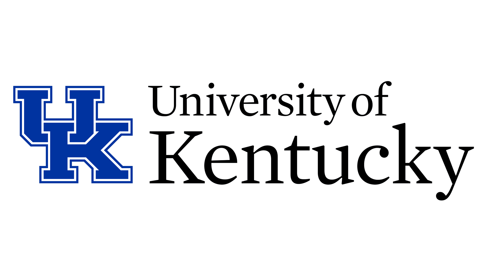
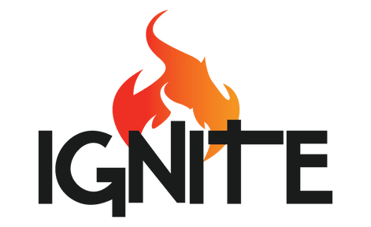

About me:
My name is Ryan Kollar and I am a Senior in Computer Science Engineering at the University of Kentucky. My hobbies include
working out, hiking, fishing, and playing sports. This is a website that aims to show off my coding projects as well as introduce myself.
Internship Experience:
I have had internship experience with Toyota as well as Allianz Life. At Toyota, I was a Production Engineer within the Environment
and Facilities group. I set up a network of sensors to monitor current conditions around the plant to
minimize the workload on team members on the floor. I also used these sensors to reduce TMMTN's Environmental
compliance risks. While working with Allianz Life, I was a Technology and Transformation Intern. Here, I worked closely
with a large range of co-workers to help solve a variety of issues with their technology.


Education:
I graduated High School from the Ignite Institute with a 4.49 GPA and then decided to go to the University of Kentucky
to study computer science. I am currently a rising senior and plan to graduate in May of 2026. Since being in school here,
I have gained skills in a large range of fields. Some of these skills include Python, C++, SQL, R, Unix, HTML, and CSS.